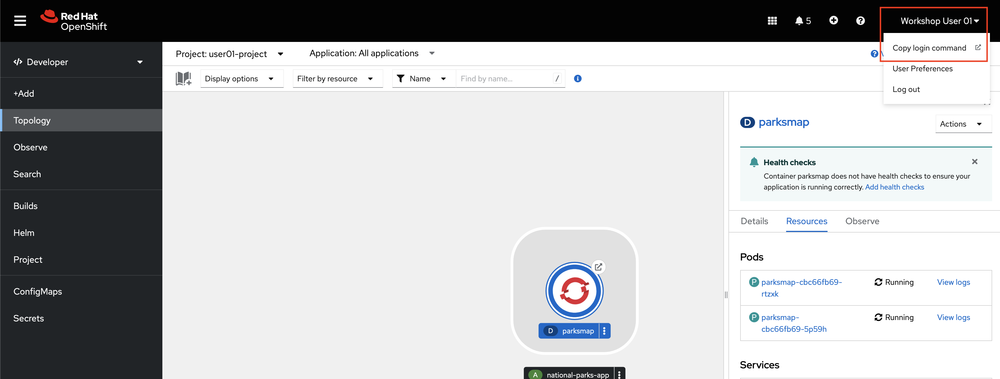
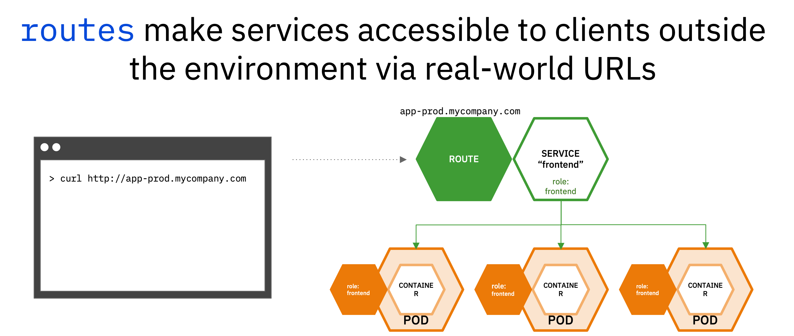
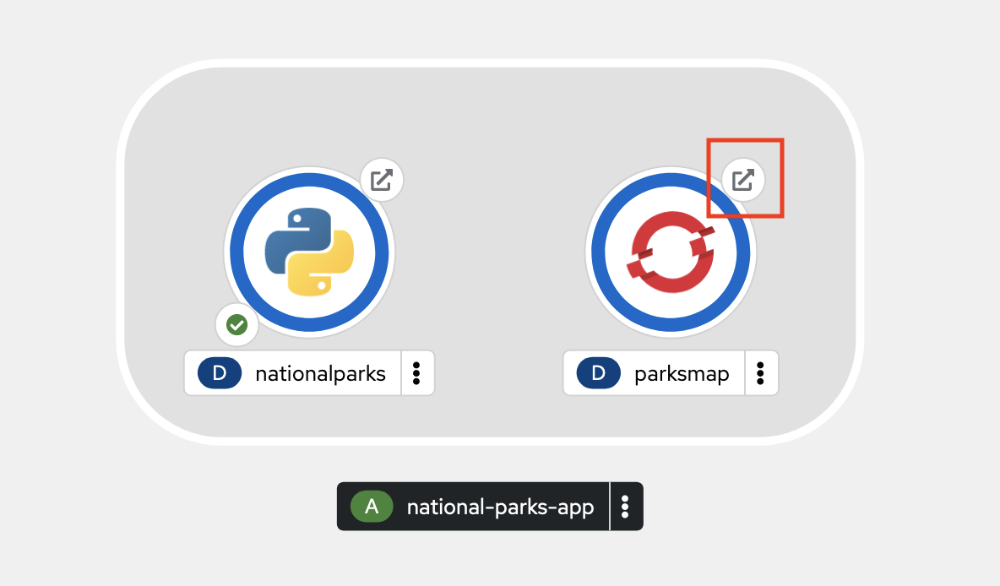
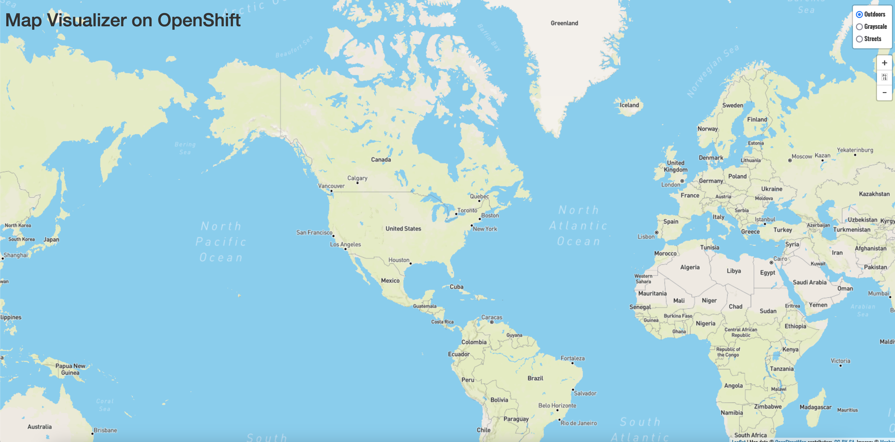
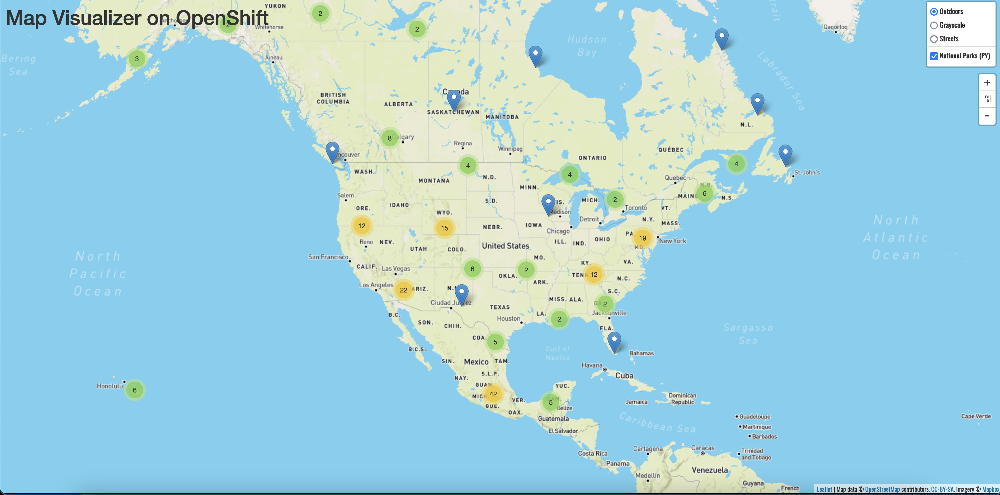

Introduction to the oc CLI¶
The oc CLI is an incredibly powerful tool to manage OpenShift clusters and applications. It is capable of performing any task you can do in the web console, and some tasks are only possible to do with oc.
oc is ideal in situations where you:
- Work directly with project source code.
- Script OpenShift Container Platform operations.
- Are restricted by bandwidth resources and cannot use the web console.
Furthermore, many people familiar with Linux and/or Kubernetes tend to find the oc command line an easier and more efficient method of performing tasks, rather than the web-based console.
Like with the OpenShift web console, the OpenShift command line includes functions both for developers and for administrators.
For those who are familiar with Kubernetes and its kubectl CLI tool, the oc tool is essentially analogous but with additional features.
Logging in with the oc CLI¶
The frontend application, parksmap, needs a backend. In this section, you will deploy a python application named nationalparks. This application performs 2D geo-spatial queries against a MongoDB database to locate and return map coordinates of all national parks in North America.
NOTE for those in the WSC hands-on lab session, you must complete the following steps from within the WSC linux guest. Refer to the access.md page. If you try to connect directly from the RHEL virtual machine terminal, the command will result in an error.
-
From the OpenShift web console, click your username in the top right corner (i.e.
Workshop User NN) and selectCopy login command.
-
Log in with your OpenShift credentials and click the Display Token hyperlink.
NOTE if the copied command fails, try adding the following flag to the end of the oc login command:
--insecure-skip-tls-verify
-
Copy the line that begins with
oc login, paste it into a terminal session, and execute the command.Sample output:
$ oc login --token=uL3fHEPSGH3io0kljsgRfAMAPIIY44BhwnGxCMA3dei4 --server=https://api.example.com:6443 Logged into "https://api.example.com:6443" as "user01" using the token provided. You have access to 161 projects, the list has been suppressed. You can list all projects with 'oc projects' Using project "user01-project".You are now logged into the cluster via the
ocCLI, and you are told which project you are using.If you’re in a project other than your own
userNN-project, use the following command to move into it:oc project userNN-project, whereNNis your user number.
Exploring the oc CLI¶
-
In your terminal, test out the
ocCLI.oc --helpSample output:
user01@lab061:~$ oc --help OpenShift Client This client helps you develop, build, deploy, and run your applications on any OpenShift or Kubernetes cluster. It also includes the administrative commands for managing a cluster under the 'adm' subcommand. Usage: oc [flags] Basic Commands: login Log in to a server new-project Request a new project new-app Create a new application status Show an overview of the current project project Switch to another project projects Display existing projects explain Documentation of resources Build and Deploy Commands: rollout Manage a Kubernetes deployment or OpenShift deployment config rollback Revert part of an application back to a previous deployment new-build Create a new build configuration start-build Start a new buildThe
--helpflag will display all of the available options the oc CLI. -
Enter the following command
oc new-app --helpSample output:
user01@lab061:~$ oc new-app --help Create a new application by specifying source code, templates, and/or images This command will try to build up the components of an application using images, templates, or code that has a public repository. It will lookup the images on the local Docker installation (if available), a container image registry, an integrated image stream, or stored templates. If you specify a source code URL, it will set up a build that takes your source code and converts it into an image that can run inside of a pod. Local source must be in a git repository that has a remote repository that the server can see. The images will be deployed via a deployment configuration, and a service will be connected to the first public port of the app. You may either specify components using the various existing flags or let new-app autodetect what kind of components you have provided. If you provide source code, a new build will be automatically triggered. You can use 'oc status' to check the progress. Usage: oc new-app (IMAGE | IMAGESTREAM | TEMPLATE | PATH | URL ...) [flags] Examples: # List all local templates and image streams that can be used to create an app oc new-app --list # Create an application based on the source code in the current git repository (with a public remote) and a Docker image oc new-app . --docker-image=repo/langimageThe
--helpflag now displays all of the available options for the oc new-app command. If you get confused about any of the commands we use in this workshop, or just want more information, using this flag is a good first step.
oc new-app is a powerful and commonly used command in the OpenShift CLI. It has the ability to deploy applications from components that include:
- Source or binary code
- Container images
- Templates
The set of objects created by oc new-app depends on the artifacts passed as an input.
Use oc to Deploy a Python Application from Source Code¶
The frontend application, parksmap, needs a backend. In this section, you will deploy a python application named nationalparks. This application performs 2D geo-spatial queries against a MongoDB database to locate and return map coordinates of all national parks in North America.
-
Deploy the python backend with the following
oc new-appcommand.oc new-app python~https://github.com/mmondics/national-parks --context-dir source/nationalparks-py --name nationalparks -l 'app=national-parks-app,component=nationalparks,role=backend,app.kubernetes.io/part-of=national-parks-app,app.kubernetes.io/name=python'A few things to notice about this command:
- The
oc new-appcommand is not being run against a specific container image. It is being run against python source code that exists in GitHub here. Although a Dockerfile exists in the directory, it is not being used due to thepyhon~option in the command. OpenShift is using its source-to-image capability to create its own Dockerfile and containerize the application from its source code. If you wanted to, you could have omitted thepython~option and OpenShift would use the Dockerfile in the directory. --nameflag provides the name for the python Deployment-lsets the following key=value pairs as labels on the deployment
The output from the
oc new-appcommand tells you what all was created - an imagestream, buildconfig, deployment, and service.The buildconfig is the configuration file that will be used to build the
nationalparkscontainer image. This build will automatically begin, and you can check its logs to watch the process. - The
-
Check the
nationalparksbuild log.oc logs build/nationalparks-1 -fThe
-fflag lets you follow the build logs (similar to Linux's 'tail' command). Once you seePush successfulat the end of the build logs, your new container image has been built and pushed into OpenShift's internal registry. It will then automatically be deployed in a pod. -
Check that the
nationalparkspod is running and ready.oc get podsSample output:
➜ ~ oc get pods NAME READY STATUS RESTARTS AGE nationalparks-1-build 0/1 Completed 0 5m19s nationalparks-64d57bb8f8-4582b 1/1 Running 0 4m6s parksmap-cbc66fb69-d29rn 1/1 Running 0 3m25s parksmap-cbc66fb69-dmnf7 1/1 Running 0 3m24sOnce the
nationalparkspod isRunningand has1/1containers ready, the application is successfully deployed. However, the backend python application is only accessible from within the OCP cluster. It is not exposed to the outside world, as you may have noticed from the output of theoc new-appcommand:Application is not exposed. You can expose services to the outside world by executing one or more of the commands below: -
Create a route that exposes the
nationalparksservice.oc expose service/nationalparksIt's worth understanding a little bit about what you just did. The backend application
nationalparksruns in one pod. However, you could easily scale the number of pods runningnationalparksup as much as you'd like, or you can let OpenShift automatically scale out the number of pods (based on CPU or memory consumption) with a HorizontalPodAutoscaler. Each pod will be assigned its own individual IP address, and furthermore, if and when the pods regenerate, they will get brand new IP addresses. For these reasons, you cannot rely on the application's IP address in order to use it, like you would with many non-containerized applications.To solve this problem, Kubernetes uses services. Services are load balancers internal to the cluster that distribute requests among the application pods using label matching. If you want to access an application, you need to access the service that will then direct the request to one of the pods.
However, services are internal to the cluster. They allow pods to communicate with other pods inside the cluster, but not with the outside world. For external access, we need to introduce another object - routes.
Routes are OpenShift objects - they do not exist in upstream Kubernetes. Routes expose services as publicly-accessible addresses for users and applications to interact with. When you access an OpenShift appliction in a web browser, such as the
parksmapwebpage or even the OpenShift console, you navigate to that pod's route.
-
See the new route that was created.
oc get routeSample output:
➜ ~ oc get routes NAME HOST/PORT PATH SERVICES PORT TERMINATION WILDCARD nationalparks nationalparks-user01-project.apps.example.com nationalparks 8080-tcp None parksmap parksmap-user01-project.apps.example.com parksmap 8080-tcp edge/Redirect None -
Label the
nationalparksroute as the application backend.oc label route nationalparks type=parksmap-backend -
Navigate to the frontend
parksmaproute in a web browser. Use theparksmapHOST/PORTvalue from theoc get routescommand preceded byhttp://.For example:
http://parksmap-userNN-project.apps.example.comAlternatively, you can click the small arrow button associated with the
parksmapdeployment in the OpenShift web console topology.
Any way that you get there, your application should display the image below:

You should see a map of the world, but you will not see any icons for National Parks yet. That's because we have one more application to deploy and configure - the MongoDB database that will store all of the data about National Parks and their locations.
Deploying and Configuring MongoDB¶
The MongoDB you will deploy in this section will store all information about the National Parks, their names and coordinates.
-
Deploy the MongoDB container.
oc new-app quay.io/mmondics/mongodb:latest --name mongodb-nationalparks -e MONGODB_USER=mongodb -e MONGODB_PASSWORD=mongodb -e MONGODB_DATABASE=mongodb -e MONGODB_ADMIN_PASSWORD=mongodb -l 'app.kubernetes.io/part-of=national-parks-app,app.kubernetes.io/name=mongodb'A few things to notice about this command:
- You're deploying a pre-built container image hosted at
. --namesets the name of the MongoDB deployment-esets environment variables within the resulting container. These can be used like any other environment variable when the container is running, and you can see them by connecting to the pod and running theenvcommand-lsets labels for this deployment
- You're deploying a pre-built container image hosted at
-
In a later step, you will be adding persistent storage to this MongoDB deployment. Mounting storage requires a certain securityContext, so in preparation, please run the following command to add the proper securityContext.
oc patch deployment mongodb-nationalparks --type='json' -p='[{"op":"add","path":"/spec/template/spec/securityContext","value":{"fsGroup":184,"runAsGroup":184,"runAsUser":184}}]'Once again, you can check
oc get podsto see when the MongoDB pod is ready.NAME READY STATUS RESTARTS AGE mongodb-nationalparks-5d8b6f99f7-4wwst 1/1 Running 0 8s nationalparks-1-build 0/1 Completed 0 58m nationalparks-67b69fc9b7-z5znq 1/1 Running 0 56m parksmap-cbc66fb69-c87k7 1/1 Running 0 39mNow, you may think that you are ready to look at your frontend application again to see the backend data. However, this MongoDB requires authentication before it can be used, so in the next section, you will provide sensitive information to the application using OpenShift secrets.
Providing Sensitive Application with Secrets¶
The Secret object provides a mechanism to hold sensitive information such as passwords, OpenShift Container Platform client configuration files, private source repository credentials, and so on. Secrets decouple sensitive content from the pods. You can mount secrets into containers using a volume plugin or the system can use secrets to perform actions on behalf of a pod. By default, secrets are stored unencrypted in etcd. Therefore secrets are securable by default, not secured. To safely secure secrets, you must turn on etcd encryption as well as configure proper role-based access controls to the secret objects and etcd. Read more about secrets here.
The following procedure adds the secret nationalparks-mongodb-parameters and mounts it to the nationalparks workload.
-
Create a secret holding sensitive information (usernames and passwords).
oc create secret generic nationalparks-mongodb-parameters --from-literal=DATABASE_SERVICE_NAME=mongodb-nationalparks --from-literal=MONGODB_USER=mongodb --from-literal=MONGODB_PASSWORD=mongodb --from-literal=MONGODB_DATABASE=mongodb --from-literal=MONGODB_ADMIN_PASSWORD=mongodb -
Update the environment variable to attach the
nationalparks-mongodb-parameterssecret to thenationalparksworkload.oc set env --from=secret/nationalparks-mongodb-parameters deploy/nationalparksThe
nationalparksdeployment will notice that a change has been made, and it will create a new pod with these changes applied. Check withoc get podsuntil the new pod is up and running. -
Once the
mongodb-nationalparkspod is running and ready, run the following command to load National Park data into MongoDB.Make sure that you are in your own project before running the command.
oc exec $(oc get pods -l component=nationalparks | tail -n 1 | awk '{print $1;}') -- curl -s http://localhost:8080/ws/data/loadIf you see
"Items inserted in database: 204", the data was successfully loaded. -
Finally, return to your frontend
parksmapapplication in a web browser.
This interactive map is the culmination of all the Kubernetes and OpenShift objects that you created throughout the course of this tutorial. You can click on each icon on the map to see more details about each National Park.